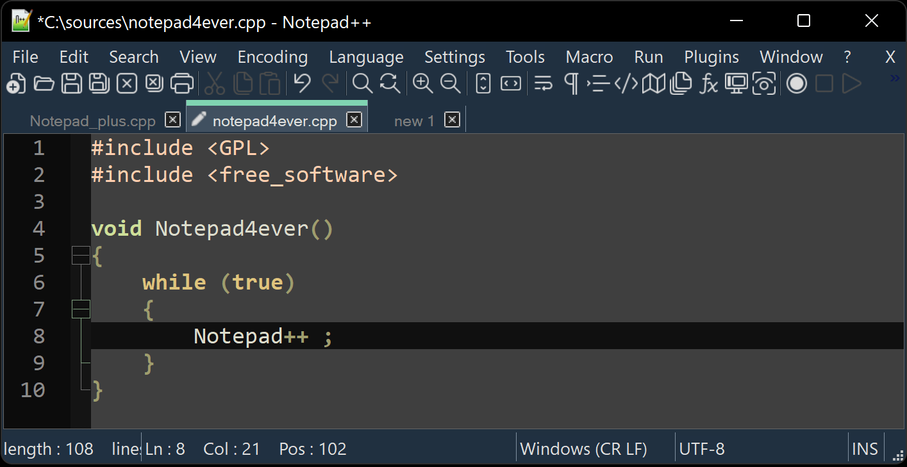

What is Notepad++
Notepad++ is a text editor and source code editor for use under Microsoft Windows.
It supports around 80 programming languages with syntax highlighting and code folding.
It allows working with multiple open files in a single window, thanks to its tabbed editing interface.
Notepad++ is available under GPL and distributed as free software
Notepad++ is a free (as in “free speech” and also as in “free beer”) source code editor and Notepad++ replacement that supports several languages.
Running in the MS Windows environment, its use is governed by GNU General Public License.
Based on the powerful editing component Scintilla, Notepad++ is written in C++ and uses pure Win32 API and STL
which ensures a higher execution speed and smaller program size. By optimizing as many routines as possible without losing user friendliness, Notepad++ is trying to reduce the world carbon dioxide emissions.
When using less CPU power, the PC can throttle down and reduce power consumption, resulting in a greener environment.

Download Notepad++
Download the latest version of Notepad++ from
Choose 32 or 64 bit Notepad++ build according to your operating system, then choose the package you want to download.
Most users use the installer as it’s the easiest route, however Notepad++ is also available in 7z and zip formats.